Cover
Creative and commercially aware Fashion Design graduate from Nottingham Trent University (2:1) with experience in presentation design, branding, and visual storytelling across sports and lifestyle projects. Skilled in developing pitch decks, campaign assets, and multi-channel design solutions using Adobe Creative Suite. Experienced in translating concepts, insights, and brand strategy into clear and compelling visual narratives across digital, print, and presentation formats. Combining a lifelong passion for sport with strong creative and collaborative skills, I am seeking to build a career within sports and entertainment design in a fast-paced agency environment.
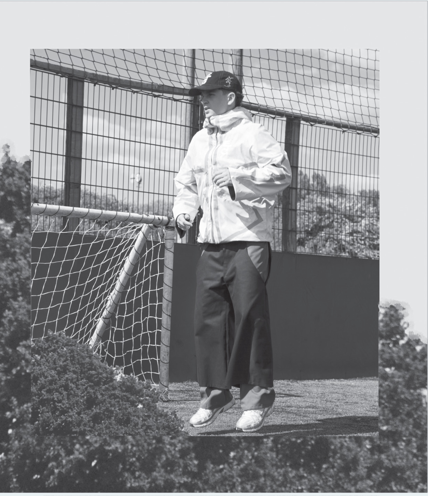
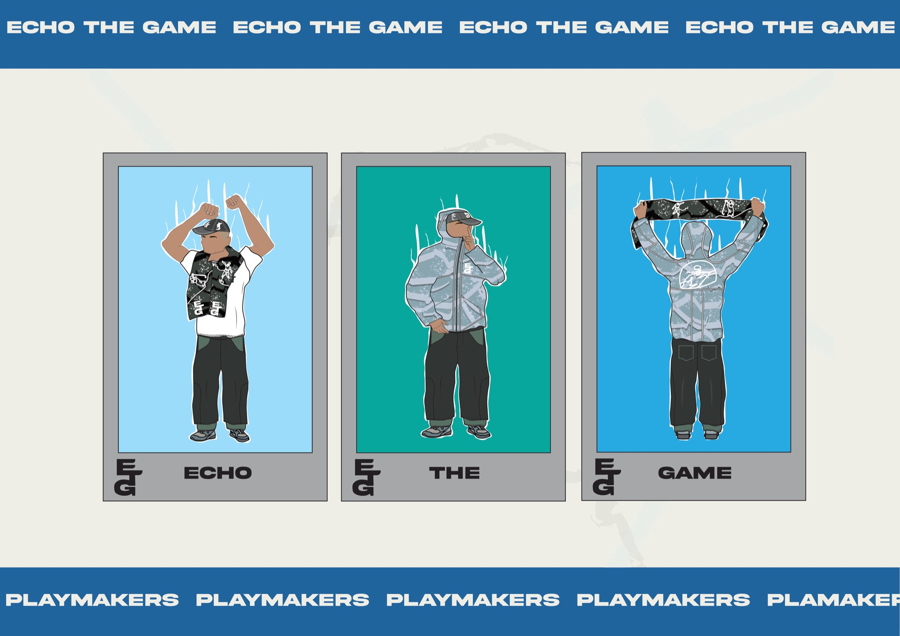
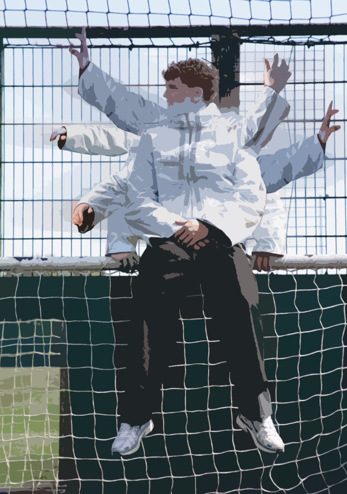
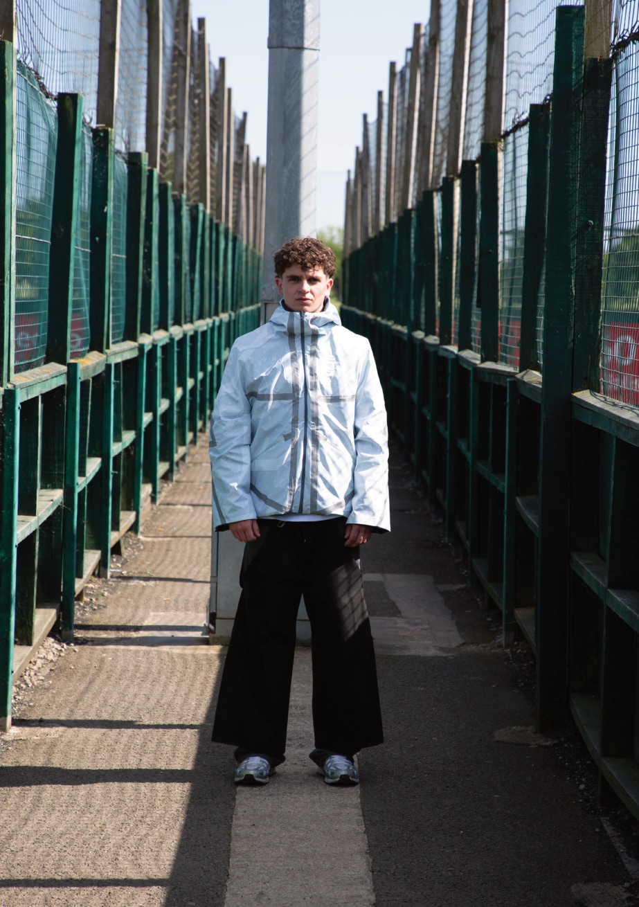
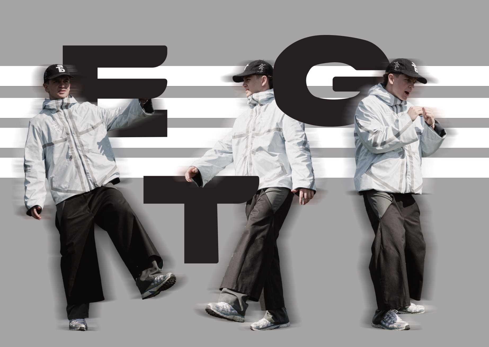
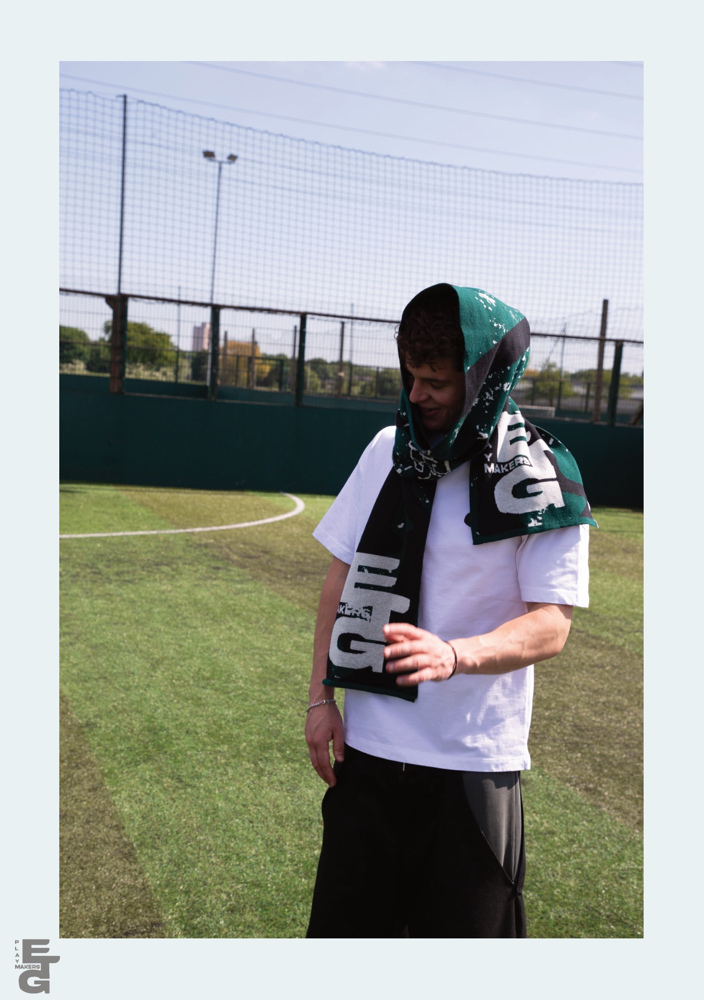
Playmakers was my final major project at Nottingham Trent University, created to explore the relationship between football fandom, identity, and fashion. Inspired by the culture and communities surrounding football, as well as the movement, mechanics, and visual language of golf, the project investigated how sport shapes personal identity both on and off the pitch. Through Playmakers, I developed a complete brand from concept to execution, including market and consumer research, product design, technical development, branding, and campaign creation. Alongside the collection, I produced a matchday programme-inspired publication to communicate the brand story and celebrate fan culture through editorial design and visual storytelling.
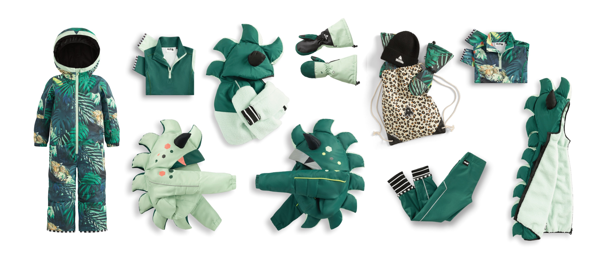
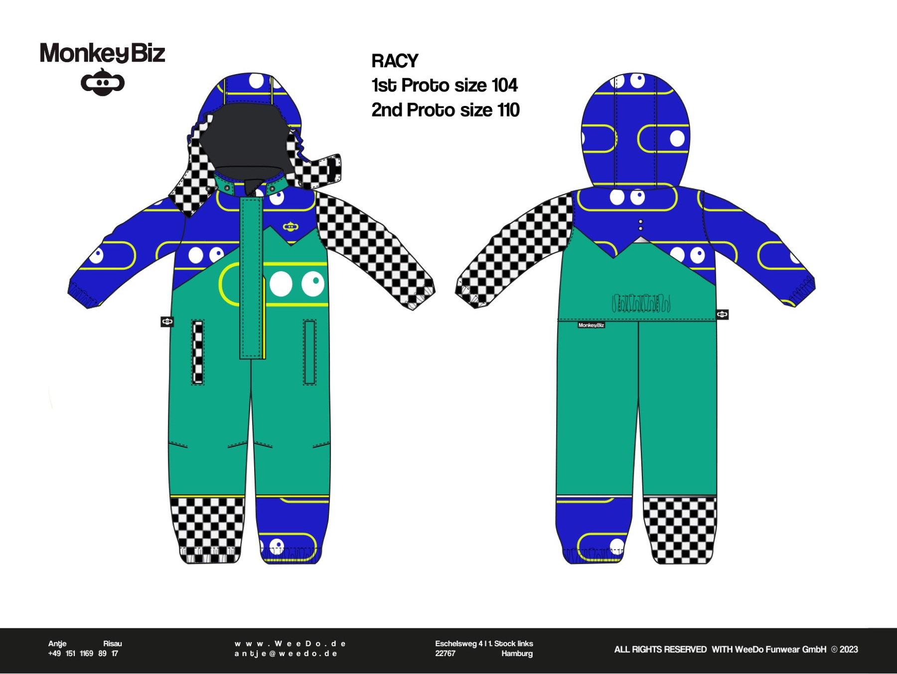
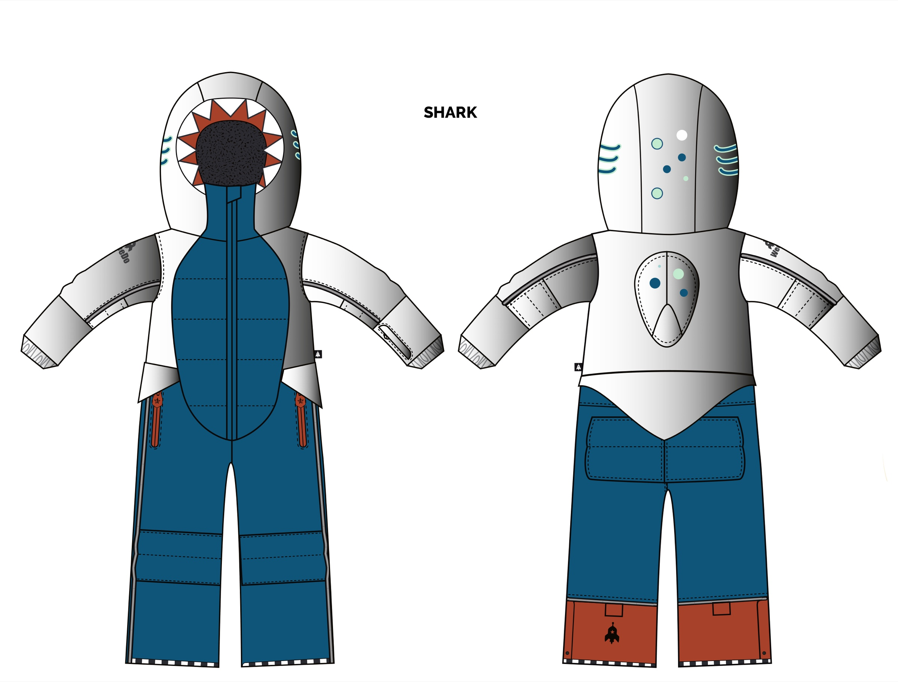
My year in industry as an Assistant Designer at WeeDo Funwear in Hamburg provided valuable commercial experience across product development, trend research, print design, technical communication, presentation design, and brand storytelling. Working closely with the founder and wider team on the AW24 ski wear collection strengthened my understanding of the product development process from concept through to production.
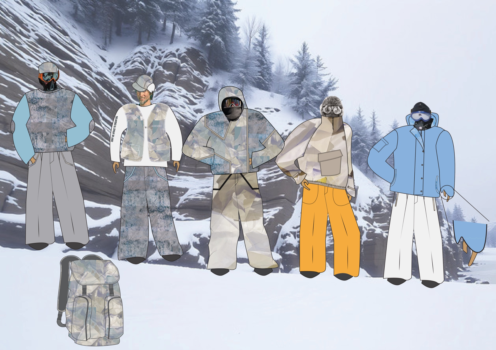
An entry for the Paul Smith design competition. "Cool in the Cold" takes inspiration from extreme mountaineering — from historic polar expeditions to Nimsdai's record-breaking 14 Peaks climb — translating technical cold-weather gear into a considered outerwear collection, backed by market research into brands like The North Face.
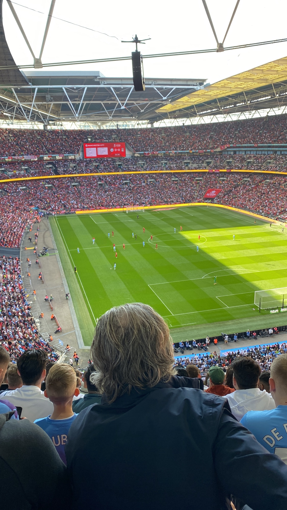
My dissertation explored the relationship between football fandom, symbolism, identity, and fashion, examining how clubs, brands, and supporters use visual identity to create community and emotional connection. The research deepened my understanding of consumer behaviour and the cultural influence of sport, informing my approach to product design and brand storytelling.